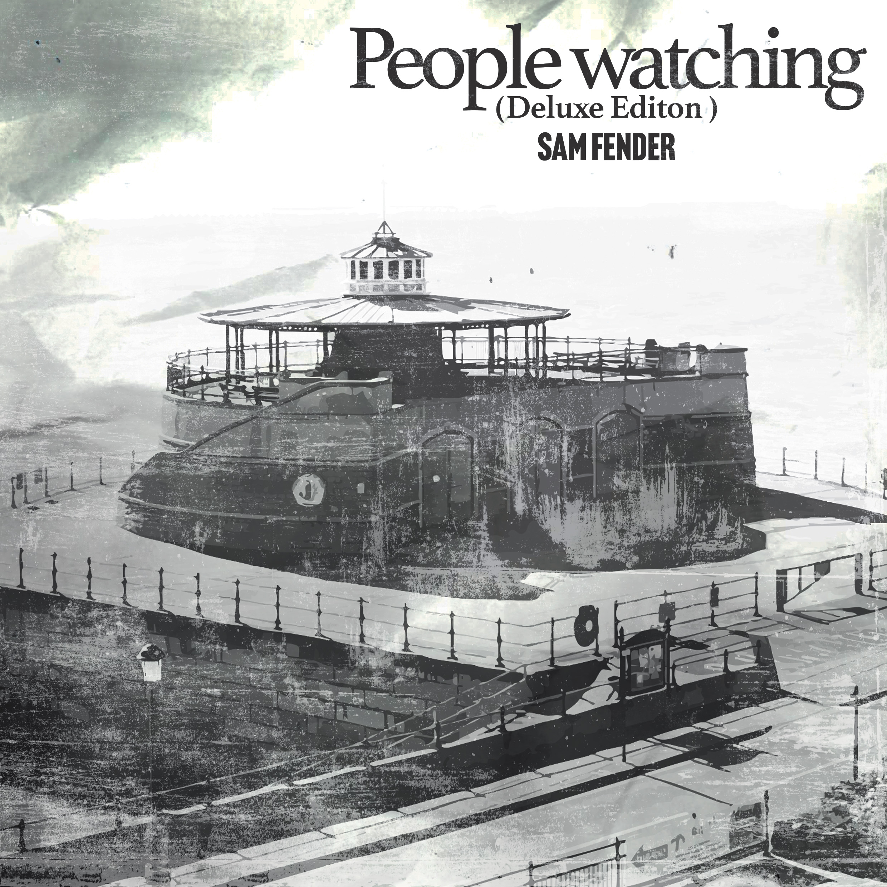
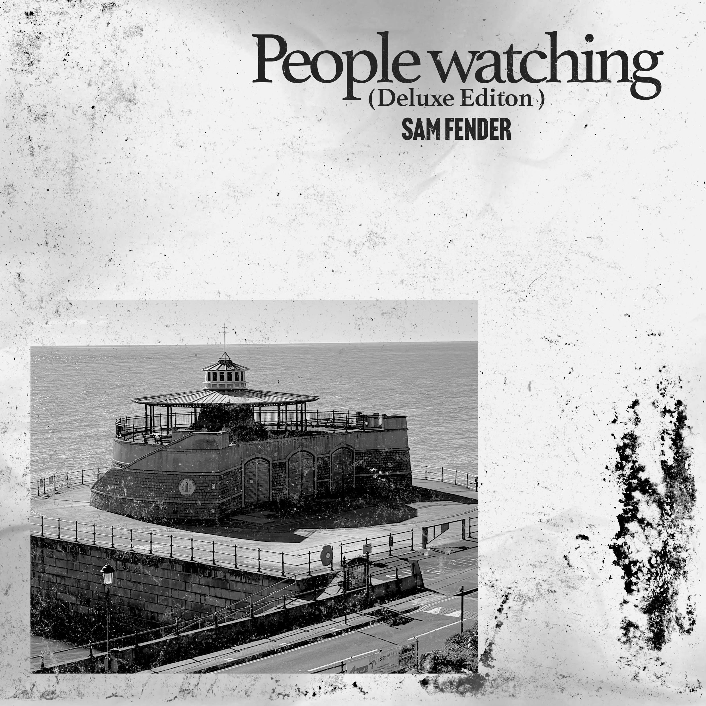
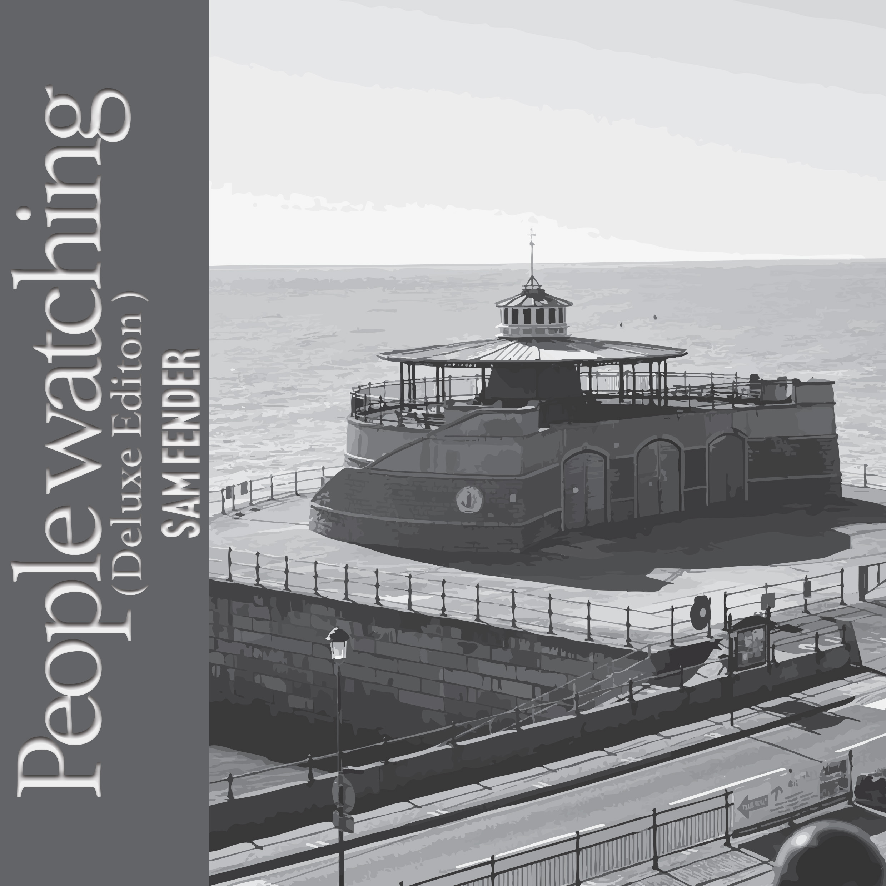

People Watching: Album Cover
This was a First term College project, In which I had to create a Album Cover.

- PurposeCollege Work
- RoleCreator
- Year2025
- ToolsCamera, Photoshop, Illustrator
I started this project as part of by A1 College Assignement, In which I had to create a album cover which was true to the size of a real cover with a 300DPI Resolution.
When creating this album I was really into Sam Fender's Music and coincidentally he was also releasing his deluxe edition of his album which led to me creating my own version of what that could look like.
To create the album cover, I originally looked at his previous album cover & single covers for People Watching, and tried to create a similar version using my own photography whilst using the same style. However i felt as it was too similar and I needed to create a version that stood out and wasnt similar to the original.
This then led to me creating a version similar to Sam Fender's Previous Album "Seventeen Going Under" in which I used the same photo I had taken but instead used Adobe Illustrator's Image trace to give it a simpilar look, along with this I also embeded the text into the side which gave it alot more depth.
Fianlly I led to mixing the illustrated look from my previous version with my own take in which I used the serif text from my first design and used it ontop of the illustrated image. I also scanned in lots of different paper textures and overlayed them with the main image to give it a grunge hand crafted type vibe.
Overall I am very happy with the final design as it uses lots of traditional resources with mixes of digital as well. All the versions of my design are also shown below.

